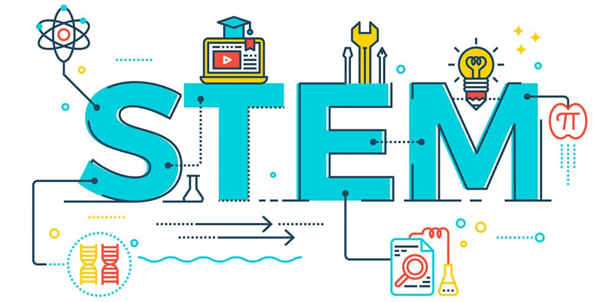

Overview
The Technology Student Association (TSA) connects with the Science, Technology, Engineering, and Math (STEM) fields
with all of their events. This page will provide information about a few of the competitive events and how they connect with STEM fields.
Science
Flight Endurance:
This event connects with the Science field because students will research and learn about flight principles and aerodynamics, and
they will use this knowledge to make a rubber band-powered model aircraft.
Forensic Science:
This event connects with the Science field because the students will participate in a written test on the basics of forensic science.
If they are semi-finalists, they will examine a mock crime scene and demonstrate their knowledge of forensic science and crime scene analysis.
Dragster Design:
This event connects with the science field because participates will build a CO2-powered dragster to compete against other designs at
the competition. They will have to learn and apply principles of aerodynamics and cars. They will also have to research about CO2 and
how it affects the the vehicle.
Technology
Biotechnology Design:
This event connects with the Technology field because students will research a biotechnology problem (that relates to the challenge of
this year) and they will create an effective multimedia presentation.
Coding:
This event connects with the Technology field because the students participate will be using a coding platform to develop a
software program that will accurately address an on-site problem in a specified, limited amount of time (at the competition).
Webmaster:
This event connects with the Technology field because the participants will design a website that features the school’s career and
technology/engineering program, the TSA chapter, and the chapter’s ability to research and present a given topic pertaining to technology.
Engineering
Architectural Design:
This event connects with the Engineering field because students will develop a physical architectural model to complete a specific
challenge. The will also use the CAD Autodesk software to develop an online model.
Structural Design and Engineering:
This event connects with the Engineering field because students will be developing a designated structure that is posted on the
TSA website. The teams will apply the principles of structural design and engineering through research, design, construction,
destructive testing, and assessment to determine the design efficiency of the structure.
Computer Integrated Manufacturing (CIM):
This event connects with the Engineering field because students will use computers to plan out a promotional product that solves the
annual TSA problem. They will then construct a prototype of this model using the tools and materials necessary.
Math
Transportation Modeling:
This event connects with the Math field because the students will generate a model of a vehicle that fits the annual design problem.
They will build this model using a scale model, which is where the math comes in!
Engineering Design:
This event connects with the Math field because the participants will develop a solution to a National Academy of Engineering grand
challenge that is posted on the national TSA website. They will need their math skills to make appropriate 3D, 2D, and computerized
models for their solutions.
Copyright © 2019 https://flyingtoucans.github.io